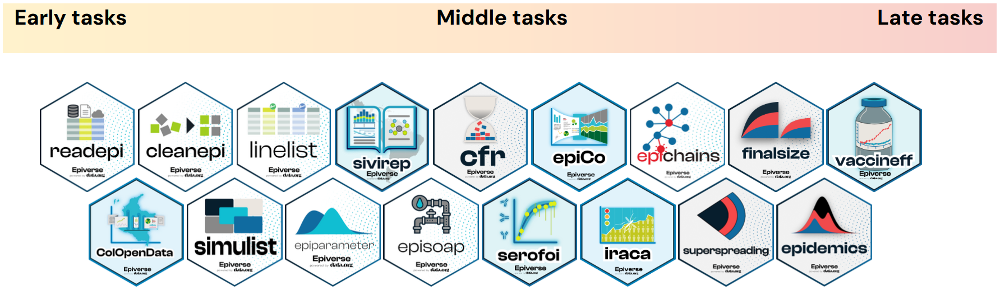

Configuração
Motivação
Surtos de doenças infecciosas podem surgir como resultado de diferentes patógenos e em diferentes contextos, mas normalmente levam a questões de saúde pública semelhantes, desde a compreensão dos padrões de transmissão e gravidade até a análise do efeito das medidas de controle (Cori et al. 2017). Podemos relacionar cada uma dessas questões de saúde pública a uma série de tarefas de análise de dados de surtos. Quanto mais eficiente e confiavelmente realizarmos essas tarefas, mais rápido e com maior precisão poderemos responder às perguntas fundamentais.
O Epiverse-TRACE tem como objetivo fornecer um ecossistema de software para análise de surtos com ferramentas integradas, generalizáveis e escaláveis, desenvolvidas pela comunidade. Apoiamos o desenvolvimento de novos pacotes R, ajudamos a conectar ferramentas existentes para torná-las mais fáceis de usar e contribuímos para uma comunidade de prática que abrange epidemiologistas de campo, cientistas de dados, pesquisadores de laboratório, analistas de agências de saúde, engenheiros de software e muito mais.
Tutoriais do Epiverse-TRACE
Nossos tutoriais são estruturados em torno de um pipeline de análise de surtos dividido em três etapas: tarefas iniciais (Early tasks), tarefas intermediárias (Middle tasks) e tarefas avançadas (Late tasks). Os resultados das tarefas concluídas nas etapas anteriores normalmente alimentam as tarefas necessárias para as etapas posteriores.

Cada tarefa possui seu próprio site de tutoriais, e cada site de tutorial consiste em um conjunto de episódios cobrindo diferentes tópicos.
| Tutoriais de tarefas iniciais ➠ | Tutoriais de tarefas intermediárias ➠ | Tutoriais de tarefas avançadas ➠ |
|---|---|---|
| Ler e limpar dados de casos, e criar linelists | Análise em tempo real e previsão | Modelagem de cenários |
| Ler, limpar e validar dados de casos, converter dados de linelist em incidência para visualização. | Acessar distribuições de atraso e estimar métricas de transmissão, prever casos, estimar gravidade e superspreading. | Simular a propagação de doenças e investigar intervenções. |
Cada episódio contém:
- Visão geral: descreve quais perguntas serão respondidas e os objetivos do episódio.
- Pré-requisitos: descreve quais episódios/pacotes idealmente precisam ser concluídos antes do episódio atual.
- Código R de exemplo: código R de exemplo para que você possa acompanhar os episódios no seu próprio computador.
- Desafios: desafios que podem ser realizados para testar seu entendimento.
- Explicações: quadros para aprofundar seu entendimento de conceitos matemáticos e de modelagem.
Consulte também o glossário para quaisquer termos com os quais você talvez não esteja familiarizado.
Pacotes R do Epiverse-TRACE
Nossa estratégia é incorporar gradualmente pacotes R especializados em um pipeline de análise tradicional. Esses pacotes devem preencher as lacunas nessas tarefas específicas da epidemiologia em resposta a surtos.

Este conteúdo pressupõe conhecimento intermediário de R. Estes tutoriais são para você se:
- Você consegue importar dados no R, transformar e remodelar dados, e produzir uma ampla variedade de gráficos
- Você está familiarizado com funções do
{dplyr},{tidyr}e{ggplot2} - Você sabe usar o pipe do magrittr
%>%e/ou o pipe nativo|>.
Esperamos que os participantes tenham algum contato com conceitos básicos de Estatística, Matemática e teoria de epidemias, mas NÃO familiaridade intermediária ou avançada com modelagem.
Instalação de softwares
Siga estas duas etapas:
1. Instalar ou atualizar o R e o Positron (ou RStudio, se preferir)
O R e o Positron são dois softwares distintos:
- O R é uma linguagem de programação e um software usado para executar códigos escritos em R.
- O Positron é um ambiente de desenvolvimento integrado (IDE) que facilita o uso do R. Recomendamos usar o Positron para interagir com o R.
Para instalar o R e o Positron (ou RStudio), siga estas instruções https://posit.co/download/rstudio-desktop/.
Espere um pouco: este é um ótimo momento para garantir que sua instalação do R esteja atualizada.
Este tutorial requer o R versão 4.0.0 ou posterior.
Para verificar se a sua versão do R está atualizada:
No Positron, a versão do R será exibida na janela do console. Ou execute
sessionInfo()nela.Para atualizar o R, baixe e instale a versão mais recente do site do projeto R para o seu sistema operacional.
Após instalar uma nova versão, você terá que reinstalar todos os seus pacotes na nova versão.
No Windows, o pacote
{installr}pode atualizar sua versão do R e migrar sua biblioteca de pacotes.
Para atualizar o RStudio, abra o RStudio e clique em
Help > Check for Updates. Se uma nova versão estiver disponível, siga as instruções na tela.
Embora isso possa parecer intimidador, é muito mais comum ter problemas devido ao uso de versões desatualizadas do R ou de pacotes R. Manter-se atualizado com as versões mais recentes do R, do Positron e de quaisquer pacotes que você utiliza regularmente é uma boa prática.
2. Verificar e instalar ferramentas de compilação (Build Tools)
Alguns pacotes exigem um conjunto complementar de ferramentas para serem compilados. Abra o Positron e copie e cole o seguinte bloco de código na janela do console, depois pressione Enter (Windows e Linux) ou Return (macOS) para executar o comando:
if(!require("pkgbuild")) install.packages("pkgbuild")
pkgbuild::check_build_tools(debug = TRUE)Esperamos uma mensagem como a apresentada abaixo:
Your system is ready to build packages!Se as ferramentas de compilação não estiverem disponíveis, isso acionará uma instalação automatizada.
- Execute o comando no console.
- Não interrompa o processo — espere até que o R exiba a mensagem de confirmação.
- Quando terminar, reinicie sua sessão do R (ou apenas reinicie o Positron) para garantir que as alterações tenham efeito.
Se a instalação automática não funcionar, você poderá instalá-las manualmente de acordo com seu sistema operacional.
Usuários de Windows precisarão de uma instalação funcional do Rtools para compilar o pacote a partir do código-fonte.
O Rtools não é um pacote R, mas sim um software que você precisa baixar e instalar. Sugerimos que você siga estes passos:
- Instale o
Rtools. Baixe o instalador doRtoolsem https://cran.r-project.org/bin/windows/Rtools/. Instale com as opções padrão. - Feche e reabra o Positron para que ele reconheça a nova instalação.
Usuários de Mac precisam de duas etapas adicionais, conforme detalhado neste guia para Configurar a C Toolchain no Mac:
- Instalar e usar o
macrtoolspara configurar a toolchain de C++ - Habilitar algumas otimizações de compilador.
Usuários de Linux precisam de detalhes específicos por distribuição. Consulte-os neste guia para Configurar a C Toolchain no Linux.
Esta etapa requer privilégios de administrador para instalar softwares.
Se você não tiver direitos de administrador em seu ambiente atual:
- Tente executar o tutorial em sua máquina pessoal, onde você tem acesso total.
- Use um ambiente de desenvolvimento pré-configurado (por exemplo, Posit Cloud).
- Peça ao seu administrador de sistemas que instale o software necessário para você.
O pacote {epicontacts}, usado no episódio sobre superspreading, depende de uma biblioteca de sistema que não é instalada junto com o R: a libglpk. Sem ela, library(epicontacts) falha com uma mensagem parecida com libglpk.so.40: cannot open shared object file.
No Ubuntu ou Debian, instale antes de seguir:
sudo apt install libglpk403. Instalar os pacotes R necessários
Abra o Positron e copie e cole o seguinte bloco de código na janela do console, depois pressione Enter (Windows e Linux) ou Return (macOS) para executar o comando (se desejar usar o espelho brasileiro do CRAN para acelerar downloads, execute antes: options(repos = c(CRAN = "https://cran-r.c3sl.ufpr.br/"))):
# para os episódios sobre acessar atrasos e quantificar a transmissão
if(!require("pak")) install.packages("pak")
new_packages <- c(
"EpiNow2",
"epiparameter",
"incidence2",
"tidyverse"
)
pak::pkg_install(new_packages)# para os episódios sobre previsão e gravidade
if(!require("pak")) install.packages("pak")
new_packages <- c(
"EpiNow2",
"cfr",
"epiparameter",
"incidence2",
"outbreaks",
"tidyverse"
)
pak::pkg_install(new_packages)# para os episódios sobre superspreading e cadeias de transmissão
if(!require("pak")) install.packages("pak")
new_packages <- c(
"epicontacts",
"fitdistrplus",
"superspreading",
"epichains",
"epiparameter",
"incidence2",
"outbreaks",
"tidyverse"
)
pak::pkg_install(new_packages)Estas etapas de instalação podem perguntar ? Do you want to continue (Y/n); digite Y e pressione Enter.
Você recebeu um erro com o pak?
Tente usar a função clássica para instalar um pacote individual; por exemplo, para instalar {cfr}, execute:
install.packages("cfr")Você precisa de um Personal Access Token (PAT) do GitHub?
Se a mensagem de erro incluir uma expressão como Personal access token (PAT), você pode precisar configurar seu token do GitHub.
Primeiro, instale estes pacotes R:
if(!require("pak")) install.packages("pak")
new <- c("gh",
"gitcreds",
"usethis")
pak::pak(new)Depois, siga estas três etapas para configurar seu token do GitHub (leia este guia passo a passo):
# Gerar um token
usethis::create_github_token()
# Configurar seu token
gitcreds::gitcreds_set()
# Obter um relatório da situação
usethis::git_sitrep()Tente instalar o {epiparameter} novamente:
if(!require("remotes")) install.packages("remotes")
remotes::install_github("epiverse-trace/epiparameter")Se o erro persistir, entre em contato conosco!
Você deve atualizar todos os pacotes necessários para o tutorial, mesmo que os tenha instalado relativamente recentemente. Novas versões trazem melhorias e correções de bugs importantes.
4. Verificar a instalação
Quando a instalação terminar, você pode tentar carregar os pacotes colando o seguinte código no console:
# para os episódios sobre acessar atrasos e quantificar a transmissão
library(EpiNow2)
library(epiparameter)
library(incidence2)
library(tidyverse)# para os episódios sobre previsão e gravidade
library(EpiNow2)
library(cfr)
library(epiparameter)
library(incidence2)
library(outbreaks)
library(tidyverse)# para os episódios sobre superspreading e cadeias de transmissão
library(epicontacts)
library(fitdistrplus)
library(superspreading)
library(epichains)
library(epiparameter)
library(incidence2)
library(outbreaks)
library(tidyverse)Se você NÃO vir um erro como there is no package called ‘...’, está tudo pronto! Se vir, entre em contato conosco!
5. Assistir e ler o material pré-curso
Assista a três revisões em vídeo de 5 minutos sobre distribuições estatísticas:
- StatQuest com Josh Starmer (2017) The Main Ideas behind Probability Distributions, YouTube. Disponível em: https://www.youtube.com/watch?v=oI3hZJqXJuc&t
StatQuest com Josh Starmer (2018) Probability is not Likelihood. Find out why!!!, YouTube. Disponível em: https://www.youtube.com/watch?v=pYxNSUDSFH4
StatQuest com Josh Starmer (2017) Maximum Likelihood, clearly explained!!!, YouTube. Disponível em: https://www.youtube.com/watch?v=XepXtl9YKwc
Conjuntos de dados
Baixar os dados
Faremos o download dos dados diretamente a partir do R durante o tutorial. No entanto, se você prevê problemas com a conexão de rede, pode ser melhor baixar os dados previamente e armazená-los em sua máquina.
Os arquivos de dados para o tutorial podem ser baixados manualmente aqui:
<data/ebola_cases.csv>
<data/sarscov2_cases_deaths.csv>
Suas dúvidas
Se precisar de ajuda para instalar os softwares ou tiver qualquer outra dúvida sobre este tutorial, envie um e-mail para andree.valle-campos@lshtm.ac.uk